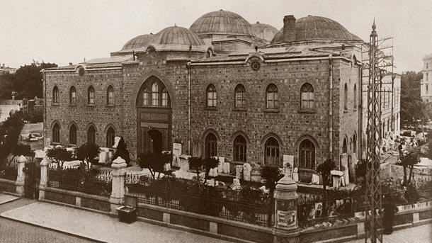

<div class="page-header">
    <h3> Карта на архиологическия музей</h3>
</div>
<div class="row">
    <div class="col-xs-12 col-md-12">
        <a href="#" class="thumbnail">
            
        </a>
    </div>
</div>
<div class="row">
    <div class="col-xs-12 col-md-12">
          <h4 class="text-center"><small>Вера и Иво рисуват карта на музея и отбелязват най-интересните неща, които са видели!</small></h4>
    </div>
</div>
